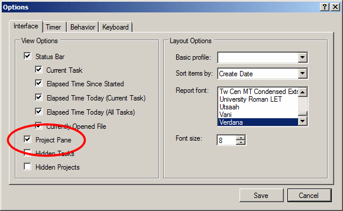
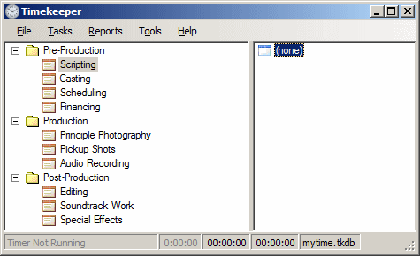
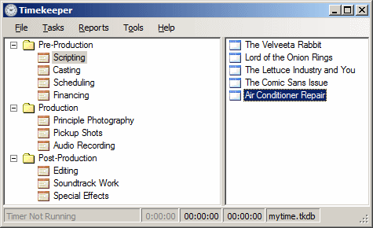

Timekeeper allows you to define one or more projects for time tracking. A project is a way of further categorizing the tasks you work on.
By default, the Project pane is hidden, in order to present the simplest interface possible when you first begin to use Timekeeper. To display it, right-click anywhere in the Task pane and select Show Projects. (Or, press F6 to view the Options dialog box and check the "Project Pane" checkbox in the View Options on the Interface tab:

Creating new projects is as easy as creating new tasks. Use the menu function or right-click anywhere on the Projects pane and select .
Give the project a name and an optional description. You can associate it with a folder (if any folders have been defined) or leave it at the top level. Click Save and you're done. You can now log time against this new project.
By default, a single Project is created for you when you create a new Timekeeper file. While projects are not displayed by default, you are required to select a project when using the timer. By default, the "(none)" project is used:

With projects, you can view how much time you spent on one or more tasks for a given project. For example, you can now answer, "How much time did I spend on The Lettuce Industry and You?" irrespective of which tasks you were working on. Similarly, you can see how much time you spent on Scripting, on a project by project basis:
